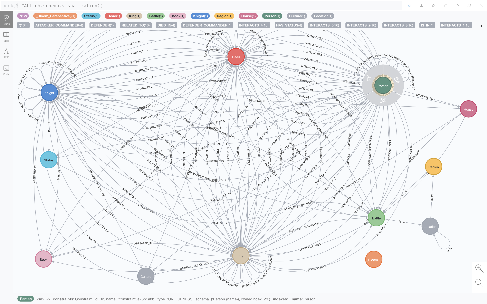
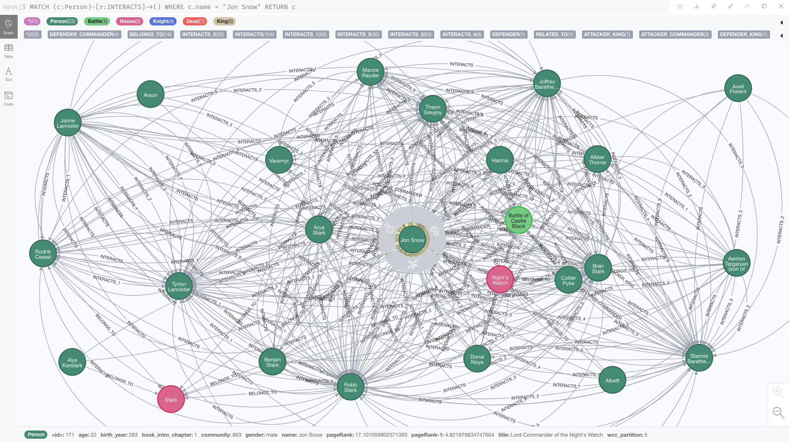

Game of Thrones - Knowledge Graph analysis using Neo4j
Contents
Game of Thrones - Knowledge Graph analysis using Neo4j#
The Neo4j Graph Data Science (GDS) library contains a set of graph algorithms, exposed through Cypher procedures. Graph algorithms provide insights into the graph structure and elements, for example, by computing centrality and similarity scores, detecting communities and path finding algorithms.
The goal of this study is to understand the workings of neo4j data science library algorithms.
:play https://guides.neo4j.com/sandbox/graph-data-science/index.html

Following is a walkthrough over the product tier algorithms with examples on: PageRank, Label Propagation, Weakly Connected Components, Louvain, Node Similarity and Betweenness Centrality.
Example Dataset#
The dataset comprises of Neo4j Graph Data Science library based on Game of Thrones fantasy saga, data collected from:
Chris Albon’s collection of battles from “The War of the Five Kings” dataset
Erin Pierce and Ben Kahle’s Character deaths
Team at A Song of Ice and Data - which makes prediction of characters death
The graph comprises of :Person nodes representing characters and :INTERACTS relationships, representing characters. An interaction occurs each time two characters names appear within 15 words of one another in the book text - Network of Thrones, A Song of Math and Westeros, research by Dr Andrew Beveridge. The graph is enriched with data on houses, battles, commanders, kings, knights, regions, locations and deaths.
Summary Statistics
Number of interactions per character
MATCH (c:Person)-[:INTERACTS]->()
WITH c, count(*) AS num
RETURN min(num) AS min, max(num) AS max, avg(num) AS avg_interactions, stdev(num) AS stdev
min |
max |
avg_interactions |
stdev |
|---|---|---|---|
1 |
170 |
6.783 |
14.926 |
Number of interactions per book
MATCH (c:Person)-[r:INTERACTS]->()
WITH r.book AS book, c, count(*) AS num
RETURN book, min(num) AS min, max(num) AS max, avg(num) AS avg_interactions, stdev(num) AS stdev
ORDER BY book
“book” |
“min” |
“max” |
“avg_interactions” |
“stdev” |
|---|---|---|---|---|
1 |
1 |
51 |
4.920863309352513 |
7.096707491528077 |
2 |
1 |
37 |
4.015544041450774 |
5.360422756122161 |
3 |
1 |
36 |
4.299145299145296 |
5.359624862384757 |
4 |
1 |
52 |
3.589473684210528 |
5.477215406610821 |
5 |
1 |
45 |
3.290043290043290 |
4.758318619541398 |
Graph creation#
To enable fast caching of the graph topology, containing only the relevant nodes, relationships, and weights, the GDS library operates on in-memory graphs that are created as projections of the Neo4j stored graph.
These projections may change the nature of the graph elements by any of the following:
Subgraphing
Renaming relationship types or node labels
Merging several relationship types or node labels
Altering relationship direction
Aggregating parallel relationships and their properties
Deriving relationships from larger patterns
There are two ways of creating graphs – explicit and implicit.
Graph Algorithms#
Centrality algorithms are used to determine the importance of distinct nodes in a network. The Neo4j GDS library includes the following centrality algorithms in production:
Page Rank
Label Propagation
Weakly Connected Components (WCC)
Louvain
Node Similarity
Triangle Count
Local Clustering Coefficient
Page Rank#
The PageRank algorithm measures the importance of each node within the graph, based on the number of incoming relationships and the importance of the corresponding source nodes. The underlying assumption is that a page is only as important as the pages that link to it.
PageRank was introduced in the original Google paper as a function that solves the following equation: $\(PR(A) = (1-d) + d\left(\frac{PR(T_{1})}{C(T_{1})} + ... + \frac{PR(T_{n})}{C(T_{n})}\right)\)$ where
assuming page A has pages \(T_{1}\) to \(T_{n}\) which are linked to it
d is the damping factor which can be between 0(inclusive) to 1(exclusive). This is usually set to 0.85
C(A) is defined as the number of links going out of page A
The algorithm measures transitive influence and connectivity of nodes to find the most influential nodes in a graph. It computes an influence value for each node called score. As a result, the score of a node is a certain weighted average of the scores of its direct neighbors.
PageRank is an iterative algorithm. In each iteration, every node propagates its score evenly divided to its neighbors. The algorithm runs for a configurable maximum number of iterations (default is 20), or until the node scores converge. That is, when the maximum change in node score between two sequential iterations is smaller than the configured tolerance value.
The syntax for PageRank algorithm is:
CALL gds.pageRank.stream(
graphName: String,
configuration: Map
)
YIELD
nodeId: Integer,
score: Float
The following Cypher code snippet tries to identify the most important nodes.
CALL gds.graph.create('got-interactions', 'Person', {
INTERACTS: {
orientation: 'UNDIRECTED'
}
})
CALL gds.pageRank.stream('got-interactions') YIELD nodeId, score AS pageRank
WITH gds.util.asNode(nodeId) AS n, pageRank
MATCH (n)-[i:INTERACTS]-()
RETURN n.name AS name, pageRank, count(i) AS interactions
ORDER BY pageRank DESC LIMIT 10
The query above results in following results:
“name” |
“pageRank” |
“interactions” |
|---|---|---|
“Jon Snow” |
17.1010599025714 |
190 |
“Tyrion Lannister” |
16.7364341247767 |
217 |
“Cersei Lannister” |
13.6152983867876 |
199 |
“Jaime Lannister” |
13.4245845259372 |
169 |
“Stannis Baratheon” |
11.9814333622074 |
147 |
“Daenerys Targaryen” |
11.7172358243941 |
120 |
“Arya Stark” |
11.1453364684568 |
132 |
“Robb Stark” |
10.7403650320015 |
136 |
“Eddard Stark” |
10.1710391296468 |
126 |
“Catelyn Stark” |
9.92414068839982 |
126 |
Here is the visualization graph for interactions of Jon Snow:

The following Cypher code snippet creates graph of Houses that fought in the same Battle.
CALL gds.graph.project.cypher(
'house-battles',
'MATCH (h:House) RETURN id(h) AS id',
'MATCH (h1:House)-->(b:Battle)<--(h2:House) RETURN id(h1) AS source, id(h2) AS target, count(b) AS weight'
)
CALL gds.pageRank.stream(
'house-battles',
{
relationshipWeightProperty: 'weight'
}
)
YIELD nodeId, score
RETURN gds.util.asNode(nodeId).name AS name, score
ORDER BY score DESC LIMIT 5
“name” |
“score” |
|---|---|
“Lannister” |
2.7287894781441078 |
“Stark” |
2.1861648255406108 |
“Baratheon” |
2.1530046026822225 |
“Greyjoy” |
1.5496328928325231 |
“Tully” |
1.2214130540720485 |
The Neo4j GDS library includes the following centrality algorithms to determine the importance of nodes in network:
Page Rank
Article Rank
Eigenvector Centrality
Betweenness Centrality
Degree Centrality
Closeness Centrality
Harmonic Centrality
HITS
Influence Maximization
Label Propagation#
Label propagation is a semi-supervised machine learning algorithm that assigns labels to previously unlabeled data points. At the start of the algorithm, a small subset of the data points have labels or classifications. These labels are propagated to the unlabeled points throughout the course of the algorithm.
The algorithm works as follows:
Every node is initialized with a unique community label or an identifier.
These labels propagate through the network.
At every iteration of propagation, each node updates its label to the one that the maximum number of its neighbours belongs to.
LPA reaches convergence when each node has the majority label of its neighbours.
LPA stops if either convergence, or the user-defined maximum number of iterations is achieved
Use case:
Twitter polarity classification with label propagation over lexical links and the follower graph
The syntax for Label Propagation algorithm is:
CALL gds.labelPropagation.stream(
graphName: String,
configuration: Map
)
YIELD
nodeId: Integer,
communityId: Integer
Following is the Label Propagation code snippet to find the five largest communities of people interacting with each other. The weight property on the relationship represents the number of interactions between two people. In LPA, the weight is used to determine the influence of neighboring nodes when voting on community assignment.
Running LPA with one iteration:
CALL gds.graph.create(
'got-interactions-weighted',
'Person',
{
INTERACTS: {
orientation: 'UNDIRECTED',
properties: 'weight'
}
}
)
CALL gds.labelPropagation.stream(
'got-interactions-weighted',
{
relationshipWeightProperty: 'weight',
maxIterations: 1
}
) YIELD nodeId, communityId
RETURN communityId, count(nodeId) AS size
ORDER BY size DESC
LIMIT 5
“communityId” |
“size” |
|---|---|
304 |
243 |
155 |
90 |
863 |
89 |
332 |
67 |
115 |
53 |
Running LPA with two iteration:
CALL gds.labelPropagation.stream(
'got-interactions-weighted',
{
relationshipWeightProperty: 'weight',
maxIterations: 2
}
) YIELD nodeId, communityId
RETURN communityId, count(nodeId) AS size
ORDER BY size DESC
LIMIT 5
“communityId” |
“size” |
|---|---|
304 |
331 |
863 |
110 |
155 |
90 |
332 |
79 |
115 |
59 |
Running LPA with ten iteration:
CALL gds.labelPropagation.stream(
'got-interactions-weighted',
{
relationshipWeightProperty: 'weight',
maxIterations: 2
}
) YIELD nodeId, communityId
RETURN communityId, count(nodeId) AS size
ORDER BY size DESC
LIMIT 5
“communityId” |
“size” |
|---|---|
304 |
381 |
863 |
110 |
332 |
80 |
155 |
66 |
115 |
41 |
Weakly Connected Components#
The Weakly Connected Components algorithm or Union Find finds sets of connected nodes in an undirected graph, where each node is reachable from any other node in the same set. It is called weakly because it relies on the relationship between two nodes regardless of its direction, wherefore the graph is treated as undirected. This algorithm is useful for identifying disjoint subgraphs, when pre-processing graphs, or for disambiguation purposes.
UseCase:
“Characterizing and Mining Citation Graph of Computer Science Literature”
The following Cypher code snippet creates graph of character components.
CALL gds.graph.project('got-interactions', 'Person', {
INTERACTS: {
orientation: 'UNDIRECTED'
}
})
CALL gds.wcc.stream('got-interactions')
YIELD nodeId, componentId
RETURN componentId AS component, count(nodeId) AS size
ORDER BY size DESC
The result is one large component containing 795 characters and many isolated characters.
The following Cypher code snippet creates graph of people that belong to the same culture.
CALL gds.graph.project.cypher(
'got-culture-interactions-cypher',
'MATCH (n:Person) RETURN id(n) AS id',
'MATCH (p1:Person)-[:MEMBER_OF_CULTURE]->(c:Culture)<-[:MEMBER_OF_CULTURE]-(p2:Person) RETURN id(p1) AS source, id(p2) AS target'
)
CALL gds.wcc.stream('got-culture-interactions-cypher')
YIELD nodeId, componentId
RETURN componentId AS component, count(nodeId) AS size ORDER BY size DESC
The result is components with different sizes.
Louvain#
The Louvain algorithm is a community detection algorithm designed to identify clusters of nodes in a graph. It applies heuristic modularity to define the community structure by calculating how densely connected the nodes within a community. Louvain also reveals a hierarchy of communities at different scales, which enables you to zoom in on different levels of granularity and find sub-communities within sub-communities within sub-communities.
The algorithm works as follows:
Louvain is a greedy hierarchical clustering algorithm. It repeats the following two steps until it finds a global optimum:
Assign the nodes to communities, favoring local optimizations of modularity.
Aggregate the nodes from the same community to form a single node, which inherits all connected relationships.
The method is a greedy optimization method that appears to run in time \({\displaystyle O(n\cdot \log n)}\) where n is the number of nodes in the network
The syntax for Louvain algorithm is:
CALL gds.louvain.stream(
graphName: String,
configuration: Map
)
YIELD
nodeId: Integer,
communityId: Integer,
intermediateCommunityIds: List of Integer
The Cypher query to find name of each person and id of the community to which it belong is:
CALL gds.graph.project('got-interactions', 'Person', {
INTERACTS: {
orientation: 'UNDIRECTED'
}
})
CALL gds.louvain.stream('got-interactions')
YIELD nodeId, communityId
RETURN gds.util.asNode(nodeId).name AS person, communityId
ORDER BY communityId DESC
“person” |
“communityId” |
|---|---|
“Aemon Targaryen” |
2092 |
“Durran the Devout” |
2091 |
“Baelor ‘Breakspear’ Targaryen” |
2090 |
“Arlan V Durrandon” |
2089 |
“Aenys Targaryen” |
2088 |
The Cypher query to find communities and number of members in each community is:
CALL gds.louvain.stream('got-interactions')
YIELD nodeId, communityId
RETURN communityId, COUNT(DISTINCT nodeId) AS members
ORDER BY members DESC
The result is 1382 communities, 11 of which with more than one member.
“communityId” |
“members” |
|---|---|
1202 |
162 |
205 |
155 |
77 |
118 |
233 |
112 |
706 |
67 |
20 |
60 |
46 |
45 |
1966 |
32 |
636 |
26 |
1857 |
11 |
1890 |
7 |
The Cypher query to identify communities at multiple levels in the graph is:
CALL gds.louvain.stream('got-interactions', { includeIntermediateCommunities: true })
YIELD nodeId, communityId, intermediateCommunityIds
RETURN gds.util.asNode(nodeId).name AS person, communityId, intermediateCommunityIds
ORDER BY person ASC
LIMIT 5
“person” |
“communityId” |
“intermediateCommunityIds” |
|---|---|---|
“1st: unknown2nd: unknown3rd: unknown” |
2055 |
[2055,2055,2055] |
“Abelar Hightower” |
1099 |
[1099,1099,1099] |
“Addam” |
1101 |
[1101,1101,1101] |
“Addam Frey” |
1100 |
[1100,1100,1100] |
“Addam Marbrand” |
205 |
[205,205,205] |

The Neo4j GDS library includes the following community detection algorithms:
Louvain
Label Propagation
Weakly Connected Components
Triangle Count
Local Clustering Coefficient
K-1 Coloring
Modularity Optimization
Strongly Connected Components
Speaker-Listener Label Propagation
Approximate Maximum k-cut
Conductance metric
Node Similarity#
The Node Similarity algorithm compares pairs of nodes in a graph based on their connections to other nodes. Two nodes are considered similar if they share many of the same neighbors.
The node similarity is computed using pair-wise similarities based on either the Jaccard metric also known as Jaccard Similarity Score, or the Overlap coefficient also known as the Szymkiewicz–Simpson coefficient.
Given two sets A and B, the Jaccard Similarity is computed using the following formula:
The Overlap coefficient is computed using the following formula:
The nodes A and B are similar if most nodes that are neighbors to either node are also neighbors to both.
The algorithm works as follows:
The input of this algorithm is a bipartite, connected graph containing two disjoint node sets.
Each relationship starts from a node in the first node set and ends at a node in the second node set.
The Node Similarity algorithm compares all nodes from the first node set with each other based on their relationships to nodes in the second set.
The complexity of this comparison grows quadratically with the number of nodes to compare.
The algorithm reduces the complexity by ignoring disconnected nodes.
Node Similarity has time complexity \(O(n^3)\) and space complexity \(O(n^2)\). We compute and store neighbour sets in time and space \(O(n^2)\), then compute pairwise similarity scores in time \(O(n^3)\).
The syntax for the algorithm is:
CALL gds.nodeSimilarity.stream(
graphName: String,
configuration: Map
) YIELD
node1: Integer,
node2: Integer,
similarity: Float
The Cypher query to find similar characters by comparing the books they appear or die in, and the houses and cultures to which they belong
It is a bipartite graph between Person on one side and Book, House, and Culture on the other side.
This graph creation uses projection with multiple node labels loading all types of relationships with *.
CALL gds.graph.project('got-character-related-entities', ['Person', 'Book', 'House', 'Culture'], '*')
CALL gds.nodeSimilarity.stream(
'got-character-related-entities',
{
degreeCutoff: 20, # limits character with at least 20 related entities
similarityCutoff: 0.45
}
)
YIELD node1, node2, similarity
RETURN gds.util.asNode(node1).name AS character1, gds.util.asNode(node2).name AS character2, similarity
ORDER BY similarity DESC
“character1” |
“character2” |
“similarity” |
|---|---|---|
“Gregor Clegane” |
“Ilyn Payne” |
0.5 |
“Ilyn Payne” |
“Gregor Clegane” |
0.5 |
“Mace Tyrell” |
“Loras Tyrell” |
0.4666666666666667 |
“Loras Tyrell” |
“Mace Tyrell” |
0.4666666666666667 |
“Loras Tyrell” |
“Margaery Tyrell” |
0.45161290322580644 |
“Margaery Tyrell” |
“Loras Tyrell” |
0.45161290322580644 |
The Neo4j GDS library includes the following similarity algorithms:
Node Similarity
K-Nearest Neighbors
Triangle Count#
A triangle in a graph is a set of three nodes all connected to each other. The triangle count of a node is the number of triangles that node belongs to.
In order to better understand the concept of triangle counting, let us visualize a part of the GoT graph. We will select two characters and only include relationships from the first book between them and their neighbours. First make sure to uncheck ‘Connect result nodes’ in the settings of Neo4j Browser.
The Cypher query to detect triangles in the first book between these two names and their neighbors
MATCH (n:Person)-[r:INTERACTS_1]->(m:Person)
WHERE n.name IN ["Robb Stark", "Tyrion Lannister"]
RETURN n, m, r
CALL gds.graph.project.cypher('small_got', "
MATCH (n:Person) RETURN id(n) AS id", "MATCH (n:Person)-[r:INTERACTS_1]->(m:Person)
WHERE n.name IN ['Robb Stark', 'Tyrion Lannister'] RETURN id(n) AS source, id(m) AS target
UNION MATCH (n:Person)-[r:INTERACTS_1]->(m:Person) WHERE n.name IN ['Robb Stark', 'Tyrion Lannister'] RETURN id(m) AS source, id(n) AS target")
CALL gds.triangleCount.stream('small_got')
YIELD nodeId, triangleCount
WITH gds.util.asNode(nodeId).name AS name, triangleCount
WHERE triangleCount > 0
RETURN name, triangleCount
“name” |
“triangleCount” |
|---|---|
“Robb Stark” |
2 |
“Tywin Lannister” |
1 |
“Tyrion Lannister” |
2 |
“Yoren” |
1 |
This results in two triangles count for Tyrion and Robb and one triangle for Tywin and Yoren
Betweenness Centrality#
Betweenness Centrality is a way of detecting the amount of influence a node has over the flow of information in a graph. It is often used to find nodes that serve as a bridge from one part of a graph to another.
The betweenness centrality of a node \({\displaystyle v}\) is given by the expression:
where \(\sigma_{st}\) is the total number of shortest paths from node \(s\) to node \(t\) and \(\sigma_{st}(v)\) is the number of those paths that pass through \(v\) (not where \(v\) is an end point)
The algorithms works as follows:
It calculates unweighted shortest paths between all pairs of nodes in a graph.
Each node receives a score, based on the number of shortest paths that pass through the node.
Nodes that more frequently lie on shortest paths between other nodes will have higher betweenness centrality scores
The GDS implementation is based on Brandes’ approximate algorithm for unweighted graphs. The implementation requires \(O(n + m)\) space and runs in \(O(n * m)\) time, where n is the number of nodes and m the number of relationships in the graph.
The following Cypher code snippet tries to identify the most important nodes.
CALL gds.betweenness.stream('got-interactions') YIELD nodeId, score
RETURN gds.util.asNode(nodeId).name AS name, score
ORDER BY score DESC LIMIT 5
“name” |
“score” |
|---|---|
“Jon Snow” |
65746.10756233713 |
“Tyrion Lannister” |
49958.79998213849 |
“Daenerys Targaryen” |
38022.02252425336 |
“Stannis Baratheon” |
37406.523703627994 |
“Theon Greyjoy” |
35336.02748203102 |
In comparison, Betweenness Centrality is a good metric to identify bottlenecks and bridges in a graph while Page Rank is used to understand the influence of a node in a network. The result is similar, but not identical.
CALL gds.pageRank.stream('got-interactions') YIELD nodeId, score
RETURN gds.util.asNode(nodeId).name AS name, score
ORDER BY score DESC LIMIT 5
“name” |
“score” |
|---|---|
“Jon Snow” |
17.101059902571397 |
“Tyrion Lannister” |
16.736434124776785 |
“Cersei Lannister” |
13.615298386787629 |
“Jaime Lannister” |
13.42458452593728 |
“Stannis Baratheon” |
11.981433362207436 |
References#
Neo4j Graph Data Science, URL: https://neo4j.com/docs/graph-data-science/current/
Neo4j Sandbox, URL: https://sandbox.neo4j.com